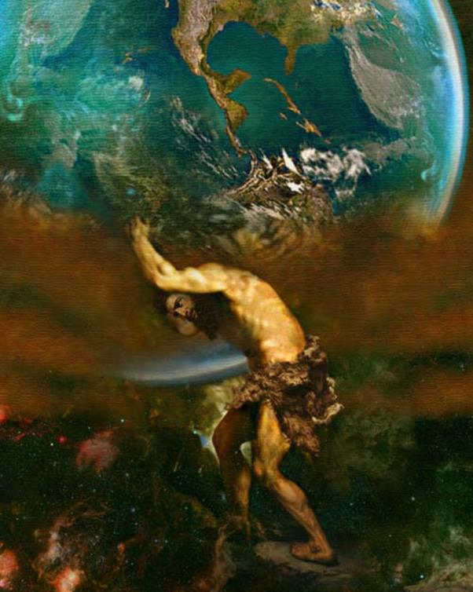

Thời gian trôi đi vùn vụt. Chẳng mấy chốc Zeus đã là một chàng trai khỏe mạnh, cường tráng. Nữ thần Đất-Gaia, bà nội của Zeus và Rhéa, mẹ Zeus, trao cho Zeus sứ mạng phải giải thoát số anh chị em bị nuốt. Trước khi bước vào cuộc giao tranh, Zeus tìm đến nữ thần Métis con của thần Okéanos, để xin một lời chỉ dẫn, vì Métis là vị nữ thần Thận trọng Khôn ngoan. Métis nói cho Zeus biết một thứ cây bí hiểm xưa nay chưa ai biết. Zeus phải lấy lá cây này về sắc thành nước cho Cronos uống thì mới có thể thành công.
Liều thuốc mới công hiệu làm sao! Cronos uống xong là lập tức trong bụng có gì nôn mửa ra hết. Thế là là ba chị gái và hai anh trai của Zeus sống lại. Cả hòn đá trá hình Zeus xưa kia cũng không mất. Tuy nhiên để lật đổ được Cronos thì lực lượng của Zeus quá yếu. Sáu anh chị em của Zeus làm sao đánh bại được các Titan cùng với con cháu của họ vốn là những vị thần có muôn vàn sức mạnh. Zeus phải giải thoát các Hécatonchires và các Cyclopes bị nhốt trong lòng đất. Những vị thần khổng lồ này xưa kia bị Ouranos đày xuống địa ngục Tartare khi Cronos lật đổ Ouranos, họ đã được giải thoát. Nhưng rồi Cronos thấy để họ sống trên dương gian sẽ có ngày gây ra hiểm họa cho địa vị của mình, vì thế tốt hơn hết là cứ trả họ về sống dưới vương quốc Tartare.
Zeus đã giải thoát cho các Cyclopes và các Hécatonchires. Lực lượng của phe Zeus mạnh hẳn lên. Với nghề rèn khéo léo, Cyclopes Argès đã sáng tạo ra chớp và trao cho Zeus,vì tên của thần, Argès, có nghĩa là “chớp”, còn Brontès thì trao cho Zeus sấm và Stéropès trao cho Zeus sét. Thật ra thì ba thứ vũ khí lợi hại này đều là công trình chung của cả ba anh em. Các Cyclopes còn rèn cho thần Hadès một chiếc mũ tàng hình. Ai đội mũ này thì địch thủ dù có trăm mắt cũng không sao thấy được. Thần Poséidon thì được cây đinh ba dài và nhọn hoắt. Với cây đinh ba này Poséidon có thể gọi gió bảo mưa, khêu sóng biển gây ra những cơn bão khủng khiếp và cũng có thể làm cho trời yên sóng lặng tùy theo ý muốn.
Riêng Titan Okéanos và con gái là Styx - nữ thần cai quản con sông âm phủ, đứng về phía Zeus. Các con của Styx là các nữ thần Nhiệt tình-Zélos, Thắng lợi-Niké, các nam thần Uy quyền-Cratos, Bạo lực-Bia đều theo mẹ chống lại Cronos và các Titan khác. Người ta còn kể Titan Japet và con cháu Titanide Mnémosyne cũng đứng về phe Zeus. Riêng Atlas con của Titan Japet là không theo cha, Atlas chống lại Zeus.
Cuộc giao tranh diễn ra suốt mười năm trời vô cùng khủng khiếp: đất lở, trời rung, biển sôi, núi sập tưởng chừng như vũ trụ thế gian trở lại cảnh hỗn mang nguyên thủy buổi nào. Các Titan bê từng quả núi ném tới tấp vào phe Zeus. Phe Zeus cũng giáng trả lại không kém. Zeus cho nổi sấm rung chuyển bầu trời, phát ra những tia chớp chói lòa mặt đất và giáng sét thiêu đốt, phá sập mọi thứ chung quanh. Thần Poséidon dùng cây đinh ba khơi sóng của Đại dương lên tạo ra những cơn giông tố hung dữ. Biển khơi sôi réo, gào thét, vật mình quằn quại làm rung chuyển cả mặt đất và run rẩy cả bầu trời. Còn các Hécatonchires với trăm tay và năm chục đầu thì không sức nào cản được. Và cuối cùng các Titan bị vây chặt phải chịu đầu hàng. Thần Zeus xiềng họ lại rồi tống giam xuống địa ngục do thần Tartare cai quản. Các Titan bị tống giam vào một khu vực hết sức nghiêm ngặt, nội bất xuất, ngoại bất nhập, chung quanh là những bức tường đồng dày. Nhưng cẩn thận hơn, Zeus còn giao cho các quỷ thần Hécatonchires trấn giữ ngay ở cửa. Riêng thần Atlas là con của Titan Japet chịu một hình phạt khác. Thần Zeus bắt Atlas phải giơ vai ra, gánh đội, chống đỡ cả bầu trời suốt quanh năm, ngày tháng. Sau này Atlas lại phạm tội bạc đãi người anh hùng Persée, con của Zeus, vi phạm truyền thống quý người trọng khách, nên đã bị Persée biến thành ngọn núi đá cao ngất. Và chính ngọn núi đá Atlas cho đến nay vẫn chống đỡ bầu trời ở trên đầu chúng ta. Nếu không có nó, có thể bầu trời đã đổ sập xuống, đổ ụp xuống đất từ lâu rồi.
Thế là sau mười năm giao tranh ác liệt, Zeus đã chấm dứt được quyền lực cai quản thế gian của các vị thần già. Các vị thần trẻ do Zeus cầm đầu từ nay sắp đặt lại trật tự trong thế gian theo ý định của mình. Họ chọn ngọn núi Olympe cao ngất làm nơi trú ngụ, xây dựng trên đó một cung điện cực kỳ nguy nga, lộng lẫy, tráng lệ. Nơi đây không khí trong veo, quanh năm ngày tháng lúc nào cũng chan hòa ánh sáng. Chẳng có khi nào tuyết rơi, băng giá, cũng chẳng có những đám mây u ám đưa mưa dầm gió bấc về. Thật là một nơi ở thanh cao, tuyệt diệu của các vị thần. Từ đây người ta gọi thế hệ các vị thần trẻ do Zeus cầm đầu là các vị thần ở ngọn núi Olympe, gọi tắt là các vị thần Olympe54.
Nói về thần Atlas, thời cổ đại người ta tạc tượng vị thần này là một con người to khỏe, lực lưỡng đang cúi khom lưng giơ vai ra chống đỡ cả một quả cầu to đè nặng xuống trên vai. Vì lẽ đó cho nên ngày nay ở nhiều nước trên thế giới, cuốn sách in bản đồ, địa lý nước này nước khác mang tên là Atlas. Từ đó mở rộng ra cả đến những cuốn sách khoa học có tuyển in tranh ảnh để minh họa và giới thiệu toàn cảnh một vấn đề cũng gọi là Atlas. Rồi đến đốt xương cổ đầu tiên của cột sống đỡ cái đầu chúng ta cho ngay thẳng khỏi suy sụp cũng mang tên Atlas. Quê hương Atlas theo người xưa kể ở miền cực Tây, tên gọi là Atlante. Vì thế miền biển cực Tây đối với người Hy Lạp, Đại Tây Dương, mới có tên gọi là Đại dương Atlantique (Océan Atlantique). Trong nghệ thuật kiến trúc, những cột chống tạc hình người, hoặc những môtíp người đội, chống đỡ cho một thành phần nào trong công trình kiến trúc, mang tên là Atlante. Vì quê hương Atlas ở Atlante cho nên người ta cũng gọi Atlas là Atlante.

Thần Atlas
[53] Tiếng Hy Lạp machie: chiến đấu giao tranh.
[54] Olympe là ngọn núi cao nhất nước Hy Lạp, cao chừng 3.000 mét phía bắc. Do là nơi ở của các vị thần nên Olympe là ngọn núi thiêng liêng, trang trọng. Trong tiếng Pháp, tính từ “Olympien” với nghĩa bóng, chỉ vẻ oai nghiêm, trang trọng.